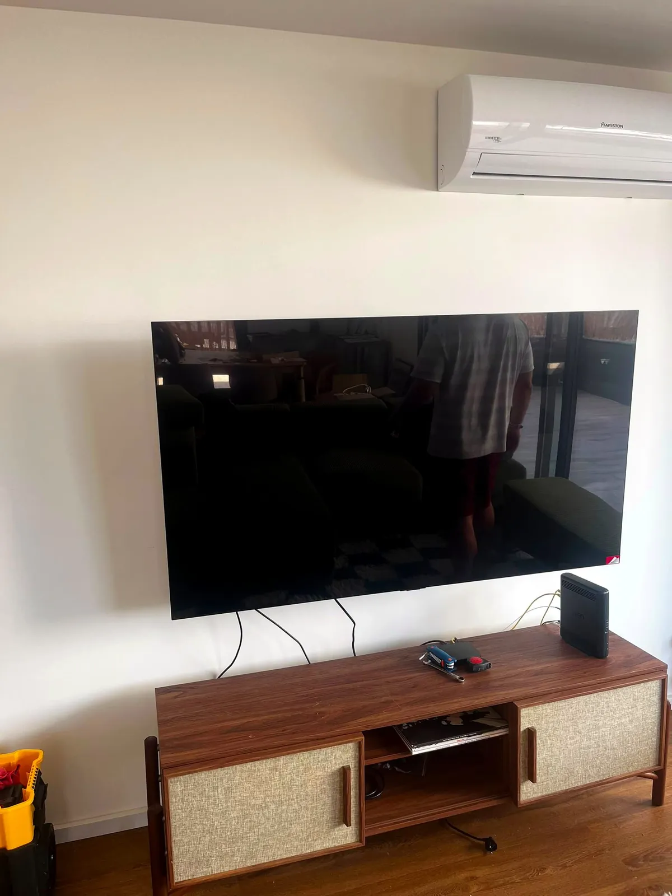
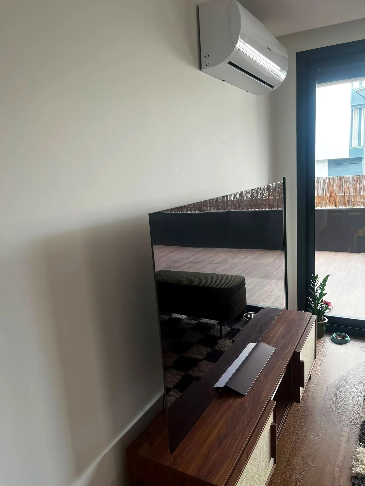

Televisão fixa na parede
A televisão estava pousada em cima do móvel e passou para a parede.
O desafio
Televisão grande pousada em cima do móvel.
A nossa solução
Montámos a televisão num suporte fixo na parede.
O resultado
Televisão alinhada na parede, por cima do móvel.
Destaques
- Suporte fixo na parede
- Televisão alinhada
- Montagem no local
Antes & depois


→